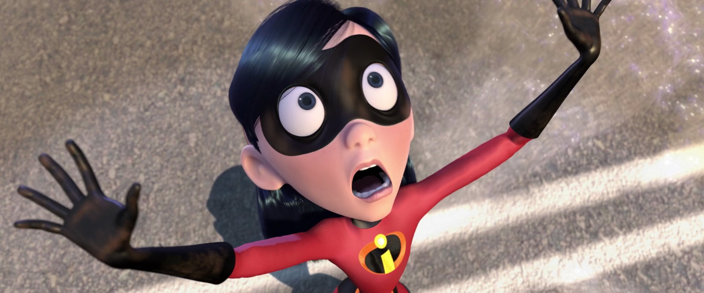
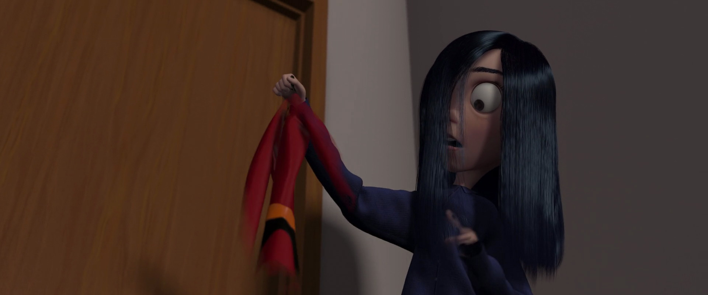
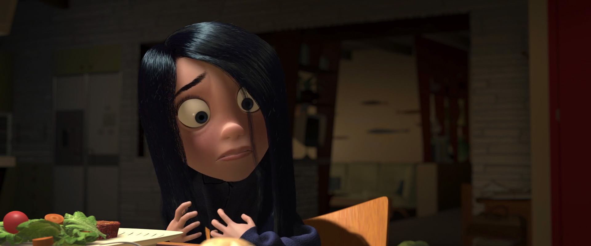
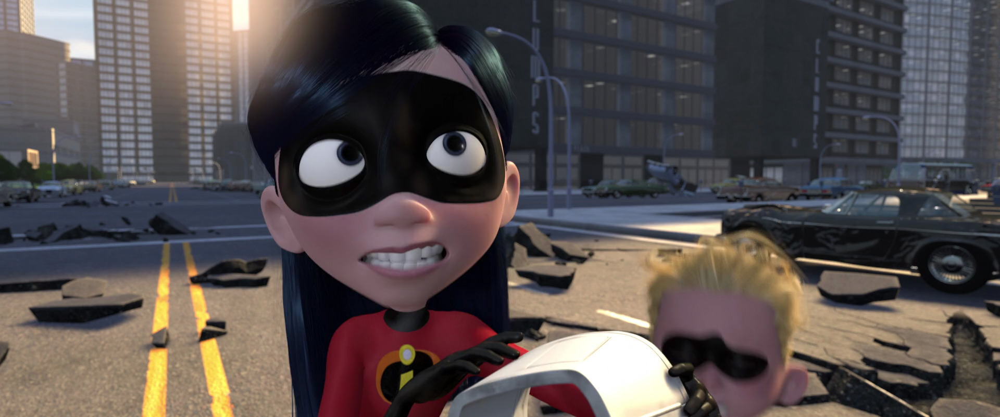
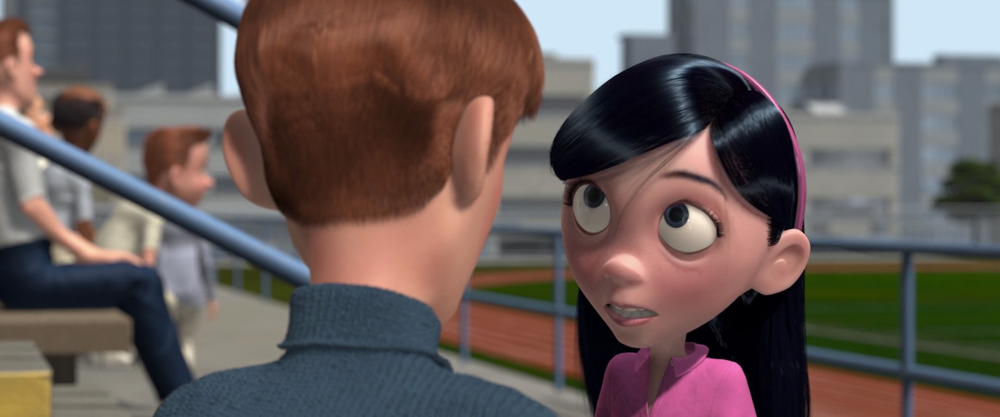
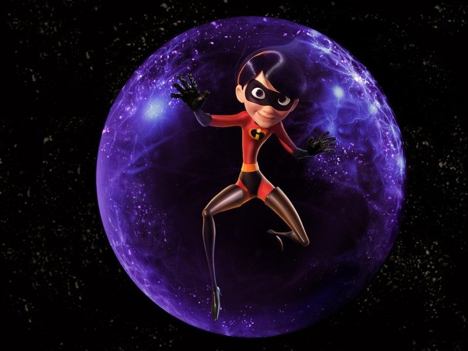
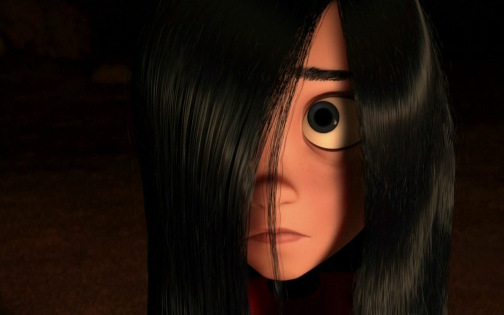

informations

Visible dans : Les Indestructibles, Les Indestructibles 2.
Nom original :Violet Parr.
Voix française : Laure Pester (Lorie).
Voix originale : Sarah Vowell.
photos



histoire
Violette Parr attend à la sortie de son école Tony Rydinger dont elle est follement amoureuse mais elle n’ose pas lui dire. Elle profite de son pouvoir d’invisibilité pour se cacher et l’observer. De retour chez elle n’a pas la joie de vivre et se dispute avec son frère à ce sujet.
Elle trouve dans la chambre de sa mère un costume de super-héros à sa taille et constate que le costume devient lui aussi invisible grâce à son pouvoir. Violette peut également générée un champ de force protecteur autour d’elle.
 Avec son frère elle monte discrètement dans l’avion de leur mère pour la suivre en mission. Violette l’informe qu’elle a appelé une baby-sitter pour s’occuper de son petit frère.
Une fois sur l’île suite à l’explosion de l’avion, Violette et son frère sont poursuivis par les gardes. Elle utilise ses pouvoirs pour se protéger. Elle finit par se faire capturer par Syndrome. Son pouvoir de bouclier lui permet de se détacher de sa prison et libère ainsi sa famille. Ensemble, ils se dirigent en ville.
 Violette, avec l’aide de sa famille, réussira à détruire le robot en récupérant la télécommande.
Avec sa famille, elle assiste à la deuxième place de son frère. Violette a pris beaucoup plus de confiance en elle et parle avec Tony pour lui faire comprendre qu’il doit l’inviter à aller au cinéma. En partant du stade, elle se prépare à affronter avec sa famille le Démolisseur.